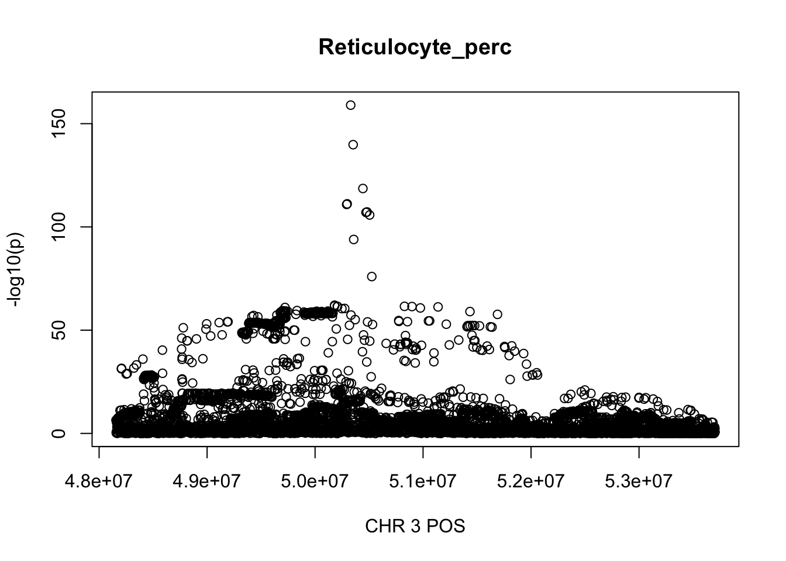
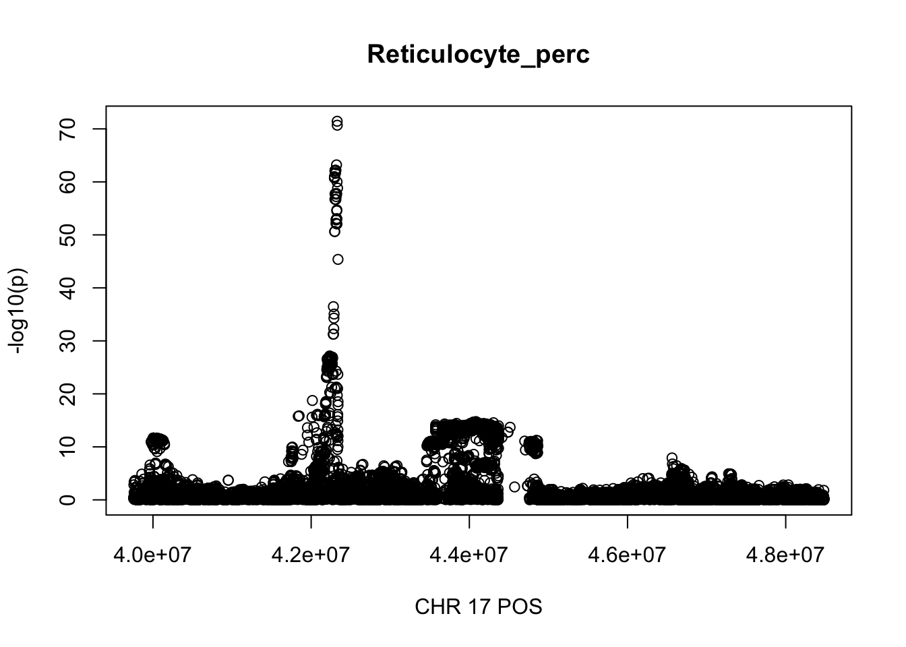

Blood cells regions
Yuxin Zou
11/19/2020
Last updated: 2020-11-20
Checks: 7 0
Knit directory: finemap-uk-biobank/
This reproducible R Markdown analysis was created with workflowr (version 1.6.2). The Checks tab describes the reproducibility checks that were applied when the results were created. The Past versions tab lists the development history.
Great! Since the R Markdown file has been committed to the Git repository, you know the exact version of the code that produced these results.
Great job! The global environment was empty. Objects defined in the global environment can affect the analysis in your R Markdown file in unknown ways. For reproduciblity it's best to always run the code in an empty environment.
The command set.seed(20191114) was run prior to running the code in the R Markdown file. Setting a seed ensures that any results that rely on randomness, e.g. subsampling or permutations, are reproducible.
Great job! Recording the operating system, R version, and package versions is critical for reproducibility.
Nice! There were no cached chunks for this analysis, so you can be confident that you successfully produced the results during this run.
Great job! Using relative paths to the files within your workflowr project makes it easier to run your code on other machines.
Great! You are using Git for version control. Tracking code development and connecting the code version to the results is critical for reproducibility.
The results in this page were generated with repository version 4044ce5. See the Past versions tab to see a history of the changes made to the R Markdown and HTML files.
Note that you need to be careful to ensure that all relevant files for the analysis have been committed to Git prior to generating the results (you can use wflow_publish or wflow_git_commit). workflowr only checks the R Markdown file, but you know if there are other scripts or data files that it depends on. Below is the status of the Git repository when the results were generated:
Ignored files:
Ignored: .DS_Store
Ignored: .Rhistory
Ignored: .Rproj.user/
Ignored: analysis/.Rhistory
Ignored: scripts/.DS_Store
Untracked files:
Untracked: data/bloodcells1.csv
Untracked: data/height.chr3.matrix
Untracked: data/susie_ss_input_sex.rds
Unstaged changes:
Modified: analysis/compare_result_more.Rmd
Note that any generated files, e.g. HTML, png, CSS, etc., are not included in this status report because it is ok for generated content to have uncommitted changes.
These are the previous versions of the repository in which changes were made to the R Markdown (analysis/bloodcells_regions.Rmd) and HTML (docs/bloodcells_regions.html) files. If you've configured a remote Git repository (see ?wflow_git_remote), click on the hyperlinks in the table below to view the files as they were in that past version.
| File | Version | Author | Date | Message |
|---|---|---|---|---|
| Rmd | 4044ce5 | zouyuxin | 2020-11-20 | wflow_publish("analysis/bloodcells_regions.Rmd") |
| html | 50a6e41 | zouyuxin | 2020-11-20 | Build site. |
| Rmd | 3bfe683 | zouyuxin | 2020-11-20 | wflow_publish("analysis/bloodcells_regions.Rmd") |
| html | 717d6b1 | zouyuxin | 2020-11-20 | Build site. |
| Rmd | c2021d0 | zouyuxin | 2020-11-20 | wflow_publish("analysis/bloodcells_regions.Rmd") |
There are 248,980 individuals of white British ancestries with 16 blood cells phenotypes. The script to prepare the phenotypes and covariates is get_bloodcells. The filtering steps are also described here.
For genotype data, variants with imputation score (INFO) > 0.9, MAF > 1% are included in association studies.
The script to run GWAS is GWAS
For each phenotype, regions for fine-mapping are defined by greedily starting with the most significantly associated SNP, including SNPs within a window of 500kb centered at the SNP, until we include all significant SNPs (p < 5e-8). We merge ovelapping regions. We exclude HLA region (chr6: 25Mb - 36Mb). The steps are
Find the most significantly associated SNP.
Choose region +- 250kb around the SNP.
Find the next most significantly associated SNP ouside the selected regions.
Choose region +- 250kb around the SNP.
Merge regions if they overlap. ...
When we select region across traits, we include all regions from each pheotype and merge overlapping regions. This produces some very large regions with more than 10000 SNPs.
library(data.table)
library(dplyr)
pheno_names = c("WBC_count", "RBC_count", "Haemoglobin", "MCV", "RDW", "Platelet_count",
"Plateletcrit", "PDW", "Lymphocyte_perc", "Monocyte_perc",
"Neutrophill_perc", "Eosinophill_perc", "Basophill_perc",
"Reticulocyte_perc", "MSCV", "HLR_perc")trait_regions = list()
for(trait in pheno_names){
# reg = fread(paste0('/gpfs/data/stephens-lab/finemap-uk-biobank/data/raw/BloodCells/regions/', trait, '_regions'))
region = fread(paste0('~/Desktop/ukb-bloodcells/regions_raw/', trait, '_regions'))
region = region %>% arrange(desc(logp))
region_r = c()
for(i in 1:22){
region.chr = region %>% filter(CHR == i) %>% arrange(start)
if(nrow(region.chr) == 0){
next
}
tmp = region.chr %>% group_by(g = cumsum(cummax(lag(end, default = first(end))) < start)) %>%
summarise(start = first(start), end = max(end), .groups = 'drop') %>%
mutate(length = end - start) %>%
mutate(CHR = i) %>% select(CHR, start, end, length)
region_r = rbind(region_r, tmp)
}
trait_regions[[trait]] = region_r
}Summary of region length for each phenotype before selecting regions across traits:
lapply(trait_regions, function(x) summary(x$length))$WBC_count
Min. 1st Qu. Median Mean 3rd Qu. Max.
378854 500000 500000 610315 500000 2301820
$RBC_count
Min. 1st Qu. Median Mean 3rd Qu. Max.
500000 500000 500000 653221 755004 2940124
$Haemoglobin
Min. 1st Qu. Median Mean 3rd Qu. Max.
301703 500000 500000 611650 500000 3251867
$MCV
Min. 1st Qu. Median Mean 3rd Qu. Max.
500000 500000 500000 670089 772563 2920824
$RDW
Min. 1st Qu. Median Mean 3rd Qu. Max.
275738 500000 500000 650422 500000 4089364
$Platelet_count
Min. 1st Qu. Median Mean 3rd Qu. Max.
270883 500000 500000 678600 766174 3646000
$Plateletcrit
Min. 1st Qu. Median Mean 3rd Qu. Max.
270883 500000 500000 640939 754988 3593140
$PDW
Min. 1st Qu. Median Mean 3rd Qu. Max.
268602 500000 500000 650832 751519 4239970
$Lymphocyte_perc
Min. 1st Qu. Median Mean 3rd Qu. Max.
378854 500000 500000 621719 753623 2239954
$Monocyte_perc
Min. 1st Qu. Median Mean 3rd Qu. Max.
310142 500000 500000 659465 751945 3864804
$Neutrophill_perc
Min. 1st Qu. Median Mean 3rd Qu. Max.
368127 500000 500000 612052 500000 2208916
$Eosinophill_perc
Min. 1st Qu. Median Mean 3rd Qu. Max.
397874 500000 500000 656940 750663 3994646
$Basophill_perc
Min. 1st Qu. Median Mean 3rd Qu. Max.
500000 500000 500000 561068 500000 1748896
$Reticulocyte_perc
Min. 1st Qu. Median Mean 3rd Qu. Max.
303607 500000 500000 653925 753414 5547602
$MSCV
Min. 1st Qu. Median Mean 3rd Qu. Max.
272793 500000 500000 656841 754786 3254290
$HLR_perc
Min. 1st Qu. Median Mean 3rd Qu. Max.
381586 500000 500000 674729 768513 5973226 For HLR_perc, the maximum region is at CHR 3 from 46234573 to 52207799, which includes 9572 SNPs.
gwas_HLR_perc = fread('~/Desktop/ukb-bloodcells/bloodcells_gwas_HLR_perc')
colnames(gwas_HLR_perc)[1] = 'CHR'
gwas_HLR_perc$P = as.numeric(gwas_HLR_perc$P)
gwas_HLR_perc = gwas_HLR_perc %>% select(CHR, POS, T_STAT, P) %>% mutate(logp = -log10(P))
gwas_HLR_perc.sub = gwas_HLR_perc %>% filter(CHR == 3, POS >= 46234573, POS <=52207799)
plot(gwas_HLR_perc.sub$POS, gwas_HLR_perc.sub$logp, xlab='CHR 3 POS', ylab='-log10(p)', main='HLR_perc')
For Reticulocyte_perc, the maximum region is at CHR 3 from 48155661 to 53703263, which includes 8888 SNPs.
gwas_Reticulocyte_perc = fread('~/Desktop/ukb-bloodcells/bloodcells_gwas_Reticulocyte_perc')
colnames(gwas_Reticulocyte_perc)[1] = 'CHR'
gwas_Reticulocyte_perc$P = as.numeric(gwas_Reticulocyte_perc$P)
gwas_Reticulocyte_perc = gwas_Reticulocyte_perc %>% select(CHR, POS, T_STAT, P) %>% mutate(logp = -log10(P))
gwas_Reticulocyte_perc.sub = gwas_Reticulocyte_perc %>% filter(CHR == 3, POS >= 48155661, POS <=53703263)
plot(gwas_Reticulocyte_perc.sub$POS, gwas_Reticulocyte_perc.sub$logp, xlab='CHR 3 POS', ylab='-log10(p)', main='Reticulocyte_perc')
For PDW, the maximum region is at CHR 8 from 7838230 to 12078200, which includes 16605 SNPs.
gwas_PDW = fread('~/Desktop/ukb-bloodcells/bloodcells_gwas_PDW')
colnames(gwas_PDW)[1] = 'CHR'
gwas_PDW$P = as.numeric(gwas_PDW$P)
gwas_PDW = gwas_PDW %>% select(CHR, POS, T_STAT, P) %>% mutate(logp = -log10(P))
gwas_PDW.sub = gwas_PDW %>% filter(CHR == 8, POS >= 7838230, POS <=12078200)
plot(gwas_PDW.sub$POS, gwas_PDW.sub$logp, xlab='CHR 3 POS', ylab='-log10(p)', main='PDW')
Select regions across phenotype:
tb = bind_rows(trait_regions, .id = "column_label")
res.final = c()
for(i in 1:22){
tb.chr = tb %>% filter(CHR == i) %>% arrange(start)
if(nrow(tb.chr) == 0){
next
}
tmp = tb.chr %>% group_by(g = cumsum(cummax(lag(end, default = first(end))) < start)) %>%
summarise(start = first(start), end = max(end), .groups = 'drop') %>%
mutate(length = end - start) %>%
mutate(CHR = i) %>% select(CHR, start, end, length)
res.final = rbind(res.final, tmp)
}
snpsnum = c()
for(i in 1:nrow(res.final)){
snpsnum = c(snpsnum, gwas_PDW %>% filter(CHR == res.final$CHR[i],
POS >= res.final$start[i],
POS <= res.final$end[i]) %>% nrow )
}
res.final$snpsnum = snpsnumSummary of region length:
summary(res.final$length) Min. 1st Qu. Median Mean 3rd Qu. Max.
307855 500000 658060 932086 1057863 8729501 Summary of SNP number for each region:
summary(res.final$snpsnum) Min. 1st Qu. Median Mean 3rd Qu. Max.
21 1512 2015 2641 3146 21219 There are 972 regoins in total, 68 regions with length greater than 2Mb, 84 regions contain greater than 5000 SNPs.
The region with maximum length and maximum number of SNPs:
gwas_HLR_perc.max = gwas_HLR_perc %>% filter(CHR == 17, POS >= 39754910, POS <=48484411)
plot(gwas_HLR_perc.max$POS, gwas_HLR_perc.max$logp, xlab='CHR 17 POS', ylab='-log10(p)', main='HLR_perc')
gwas_Reticulocyte_perc.max = gwas_Reticulocyte_perc %>% filter(CHR == 17, POS >= 39754910, POS <=48484411)
plot(gwas_Reticulocyte_perc.max$POS, gwas_Reticulocyte_perc.max$logp, xlab='CHR 17 POS', ylab='-log10(p)', main='Reticulocyte_perc')
gwas_PDW.max = gwas_PDW %>% filter(CHR == 17, POS >= 39754910, POS <=48484411)
plot(gwas_PDW.max$POS, gwas_PDW.max$logp, xlab='CHR 17 POS', ylab='-log10(p)', main='PDW')
| Version | Author | Date |
|---|---|---|
| 50a6e41 | zouyuxin | 2020-11-20 |
gwas_Lymphocyte_perc = fread('~/Desktop/ukb-bloodcells/bloodcells_gwas_Lymphocyte_perc')
colnames(gwas_Lymphocyte_perc)[1] = 'CHR'
gwas_Lymphocyte_perc$P = as.numeric(gwas_Lymphocyte_perc$P)
gwas_Lymphocyte_perc = gwas_Lymphocyte_perc %>% select(CHR, POS, T_STAT, P) %>% mutate(logp = -log10(P))
gwas_Lymphocyte_perc.max = gwas_Lymphocyte_perc %>% filter(CHR == 17, POS >= 39754910, POS <=48484411)
plot(gwas_Lymphocyte_perc.max$POS, gwas_Lymphocyte_perc.max$logp, xlab='CHR 17 POS', ylab='-log10(p)', main='Lymphocyte_perc')
| Version | Author | Date |
|---|---|---|
| 50a6e41 | zouyuxin | 2020-11-20 |
sessionInfo()R version 3.6.3 (2020-02-29)
Platform: x86_64-apple-darwin15.6.0 (64-bit)
Running under: macOS 10.16
Matrix products: default
BLAS: /Library/Frameworks/R.framework/Versions/3.6/Resources/lib/libRblas.0.dylib
LAPACK: /Library/Frameworks/R.framework/Versions/3.6/Resources/lib/libRlapack.dylib
locale:
[1] en_US.UTF-8/en_US.UTF-8/en_US.UTF-8/C/en_US.UTF-8/en_US.UTF-8
attached base packages:
[1] stats graphics grDevices utils datasets methods base
other attached packages:
[1] dplyr_1.0.2 data.table_1.13.2 workflowr_1.6.2
loaded via a namespace (and not attached):
[1] Rcpp_1.0.5 rstudioapi_0.11 whisker_0.4 knitr_1.30
[5] magrittr_1.5 tidyselect_1.1.0 R6_2.5.0 rlang_0.4.8
[9] stringr_1.4.0 tools_3.6.3 xfun_0.19 git2r_0.27.1
[13] htmltools_0.5.0 ellipsis_0.3.1 rprojroot_1.3-2 yaml_2.2.1
[17] digest_0.6.27 tibble_3.0.4 lifecycle_0.2.0 crayon_1.3.4
[21] purrr_0.3.4 later_1.1.0.1 vctrs_0.3.4 promises_1.1.1
[25] fs_1.5.0 glue_1.4.2 evaluate_0.14 rmarkdown_2.5
[29] stringi_1.5.3 compiler_3.6.3 pillar_1.4.6 generics_0.1.0
[33] backports_1.2.0 httpuv_1.5.4 pkgconfig_2.0.3